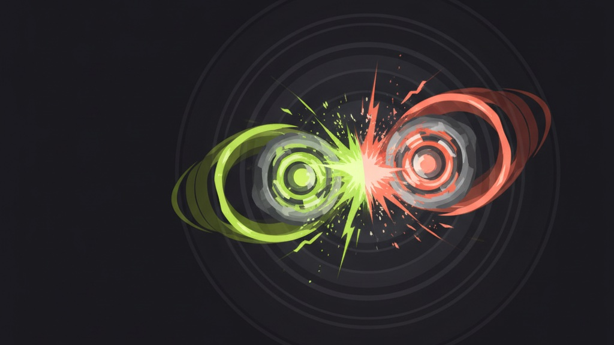

戰鬥陀螺完整歷史：從爆転到 Beyblade X
不管你是被博恩帶進坑的新朋友，還是想重溫童年的老玩家——這一頁用最舒服的方式，帶你走過戰鬥陀螺二十幾年：從日本到台灣，每個世代紅在哪、變了什麼。看完你就懂戰鬥陀螺了。
戰鬥陀螺（日文ベイブレード、英文 Beyblade）是把「轉陀螺」變成競技對戰的玩具：兩顆陀螺射進競技盤對撞，把對手打停、擊飛或打散就贏。二十多年來出過四個大世代，每一代都改寫一次玩法——也各自紅過一個時代。

四大世代・時間軸
第一世代・爆転シュート（原祖）
一切的起點。源自青木たかお的漫畫，塑膠與金屬混合的陀螺，用繞線發射器一拉就衝。動畫讓「戰鬥陀螺」成為一整個世代小孩的共同記憶。
第二世代・金屬系（Metal Fight）
陀螺「金屬化」的世代——大量金屬零件讓對撞更有份量、火花四射。暴風天馬（Storm Pegasus）等機體成為這代的招牌。
第三世代・爆烈世代（Burst）
招牌創新是「爆裂」——對撞到一定程度陀螺會當場爆開解體，多一種取勝方式，緊張感爆棚。也是 YouTube 開箱世代的主角，子系列一路出到超Z、GT、DB。
第四世代・Beyblade X（現正當紅）
主打「Xtreme Dash」——競技盤外圈有齒軌，陀螺咬合後瞬間衝刺加速，對戰更快更狠。三段式（戰刃／軸承／軸尖）可自由拆換組配，深度與競技性都拉高。
※ 世代框架與日本年份為公開資料整理；台灣各世代確切引進時間與代理沿革，部分為概述，細節以官方為準。
為什麼又紅了？一場「長大後的回歸」
戰鬥陀螺其實從沒真的消失——這些年一直有大大小小的比賽、一群人默默交流。所以這波爆紅，與其說是跟風，更像是一場長大後的回歸：當年下課擠在教室後方、卻可能買不起最強配備的孩子，如今成了聚會裡認真對戰、願意好好投入的大人。玩的還是同一顆陀螺，變的是——這次終於能盡情玩了。
也難怪它能跨世代：老玩家找回童年、新朋友被熱潮帶進來，一起在賽場上「3・2・1・Go Shoot！」。
這正是 Go Shoot 想當「最舒服的入口」的原因——不管你是重溫童年，還是第一次接觸，都能在這裡輕鬆地（重新）愛上戰鬥陀螺。
新手的 3 個小故事
「3・2・1・Go Shoot！」是官方發射口令
戰鬥陀螺對戰前的倒數發射口令就是「3・2・1・Go Shoot！」——沒錯，這也是我們店名的由來  。
。
陀螺是「拆件組裝」的，不是一顆到底
從金屬系到現在的 X，陀螺都由多個零件組成（X 是戰刃／軸承／軸尖三段），換零件就能改變攻擊、防禦、持久取向——這是它耐玩、能鑽研的原因。
四種取向像剪刀石頭布
攻擊、防禦、持久、平衡四種取向互相牽制，沒有一顆無敵。看懂相剋、配出適合自己的組合，比「買最貴」更重要。
看完想開始玩？從最舒服的方式入門
Go Shoot 不想當最硬核的賽場，我們想當讓你最舒服認識戰鬥陀螺的入口：
- 線上一番賞抽正版陀螺：每抽必中、不怕買錯，親民入手正版 Beyblade X。
- 中和實體店可試打：捷運中和站旁、設對戰賽場，當場感受再決定。
- 白話攻略帶你懂：從〈Beyblade X 是什麼〉到〈本月天梯〉，不用怕術語。
常見問題
戰鬥陀螺總共有幾個世代？
四大世代：爆転（1999）、金屬系 Metal Fight（2008）、爆烈世代 Burst（2015）、Beyblade X（2023）。
什麼時候在台灣最紅？
第一波是 2000 年代初國小校園；最新一波是 2024–2026 的 Beyblade X＋博恩效應。
新手從哪代開始？
從最新的 Beyblade X 開始最好上手、零件也買得到。Go Shoot 一番賞與中和門市都是新手友善的起點。